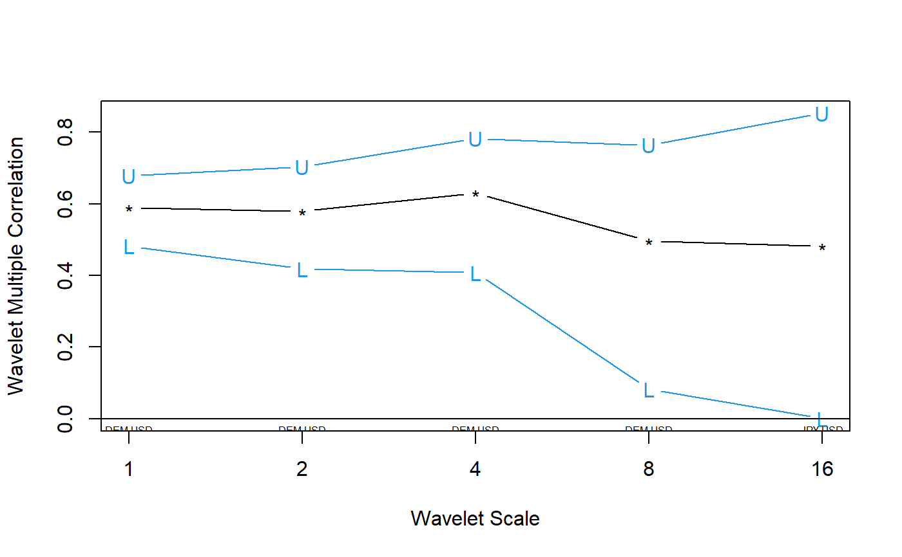

wave.multiple.correlation.RdProduces an estimate of the multiscale multiple correlation (as defined below) along with approximate confidence intervals.
wave.multiple.correlation(xx, N, p = 0.975, ymaxr=NULL)
| xx | A list of \(n\) (multiscaled) time series, usually the outcomes of dwt or modwt, i.e. xx <- list(v1.modwt.bw, v2.modwt.bw, v3.modwt.bw) |
|---|---|
| N | length of the time series |
| p | one minus the two-sided p-value for the confidence interval, i.e. the cdf value. |
| ymaxr | index number of the variable whose correlation is calculated against a linear combination of the rest, otherwise at each wavelet level wmc chooses the one maximizing the multiple correlation. |
The routine calculates one single set of wavelet multiple correlations out of \(n\) variables that can be plotted in a single graph, as an alternative to trying to make sense out of \(n(n-1)/2\) sets of wavelet correlations. The code is based on the calculation, at each wavelet scale, of the square root of the coefficient of determination in the linear combination of variables for which such coefficient of determination is a maximum. The code provided here is based on the wave.correlation routine in Brandon Whitcher's waveslim R package Version: 1.6.4, which in turn is based on wavelet methodology developed in Percival and Walden (2000); Gençay, Selçuk and Whitcher (2001) and others.
List of two elements:
numeric matrix with as many rows as levels in the wavelet transform object. The first column provides the point estimate for the wavelet multiple correlation, followed by the lower and upper bounds from the confidence interval.
numeric vector giving, at each wavelet level, the index number of the variable whose correlation is calculated against a linear combination of the rest. By default, wmc chooses at each wavelet level the variable maximizing the multiple correlation.
Fernández-Macho, J., 2012. Wavelet multiple correlation and cross-correlation: A multiscale analysis of Eurozone stock markets. Physica A: Statistical Mechanics and its Applications 391, 1097--1104. <DOI:10.1016/j.physa.2011.11.002>
Needs waveslim package to calculate dwt or modwt coefficients as inputs to the routine (also for data in the example).
## Based on data from Figure 7.8 in Gencay, Selcuk and Whitcher (2001) ## plus one random series. library(wavemulcor) data(exchange) returns <- diff(log(as.matrix(exchange))) returns <- ts(returns, start=1970, freq=12) N <- dim(returns)[1] wf <- "d4" J <- trunc(log2(N))-3 demusd.modwt <- modwt(returns[,"DEM.USD"], wf, J) demusd.modwt.bw <- brick.wall(demusd.modwt, wf) jpyusd.modwt <- modwt(returns[,"JPY.USD"], wf, J) jpyusd.modwt.bw <- brick.wall(jpyusd.modwt, wf) rand.modwt <- modwt(rnorm(length(returns[,"DEM.USD"])), wf, J) rand.modwt.bw <- brick.wall(rand.modwt, wf) xx <- list(demusd.modwt.bw, jpyusd.modwt.bw, rand.modwt.bw) Lst <- wave.multiple.correlation(xx, N = length(xx[[1]][[1]])) returns.modwt.cor <- Lst$xy.mulcor[1:J,] YmaxR <- Lst$YmaxR exchange.names <- c("DEM.USD", "JPY.USD", "RAND") ##Producing plot par(mfrow=c(1,1), las=0, mar=c(5,4,4,2)+.1) matplot(2^(0:(J-1)), returns.modwt.cor[-(J+1),], type="b", log="x", pch="*LU", xaxt="n", lty=1, col=c(1,4,4), xlab="Wavelet Scale", ylab="Wavelet Multiple Correlation")